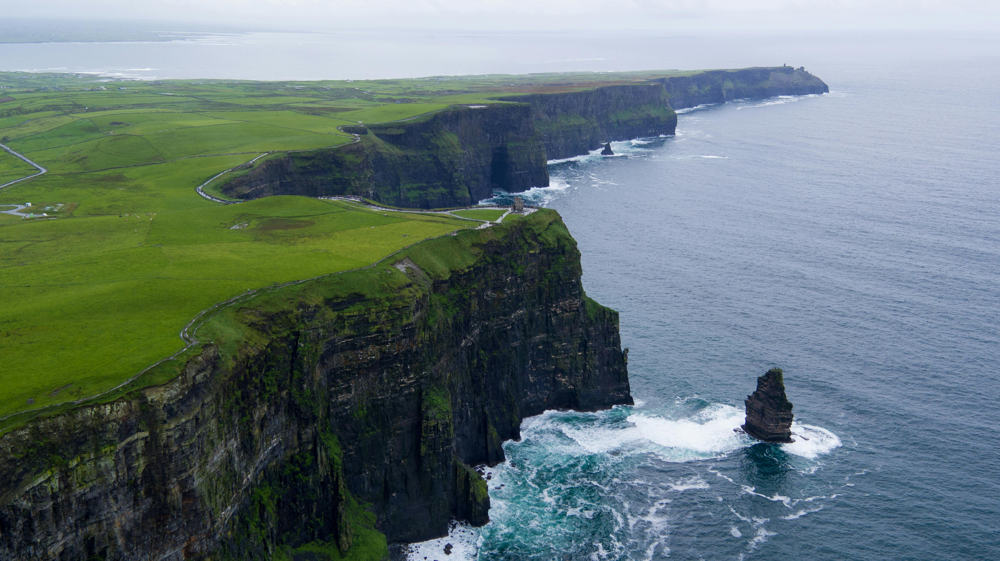
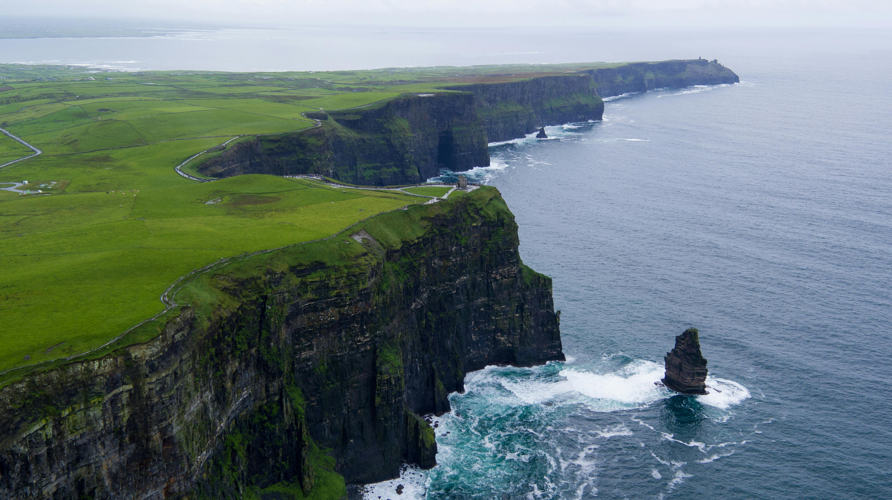

Soul of the Isle is a vibrant website dedicated to the celebration and preservation of Irish music — a tradition as deep and rich as the green hills of the Emerald Isle itself. From the ancient songs of Celtic tribes to modern stage productions, the site invites visitors to explore the stories, instruments, and people who have shaped the musical heart of Ireland. Whether you're a curious listener, an aspiring musician, or someone who simply appreciates cultural heritage, Soul of the Isle offers a gateway into the living tradition of Irish music. Irish music is one of the oldest and most enduring musical traditions in the world. On Soul of the Isle, visitors can take a journey through time, beginning with the early Celtic period when music was central to storytelling, ceremony, and community life. In those early centuries, bards and harpers were highly respected figures, using music and poetry to preserve legends and celebrate heroic deeds. The tradition was not just entertainment — it was a way of recording history and transmitting values. As Ireland transitioned through centuries of change — including Christianization, invasions, and colonization — music evolved but remained vital. During the British occupation and especially during the Great Famine, Irish melodies took on deeper emotional weight. Songs became vessels of sorrow, rebellion, and hope, allowing Irish people to maintain a sense of identity and unity. Even as people emigrated across the world, particularly to North America, they carried these songs with them, blending Irish music with other folk styles to form new hybrid genres. Soul of the Isle explores these periods in depth, offering timelines, archival recordings, and stories from musicians past and present.
Hisotry
Irish music has a long and fascinating history that’s deeply woven into the fabric of Ireland’s culture.
Long before songs were ever written down, music was used to tell stories, share legends, and pass down family histories.
It wasn’t just about entertainment—it was how people remembered where they came from and connected with one another.
Whether it was a joyful gathering or a quiet moment of reflection, music was always part of the experience.
Over the centuries, this oral tradition helped shape a strong sense of community across the island.
People didn’t just listen to music—they participated in it.
Songs and tunes were passed from neighbor to neighbor, parent to child, often changing slightly along the way.
This evolving tradition gave Irish music a sense of living history, with each performance adding a new layer to
something much older than any one person.
Ireland went through some difficult chapters, especially during British rule, when many aspects of Irish culture were
discouraged or outright banned. But music never disappeared. People kept it alive in their homes, at secret gatherings, and
in the countryside, far from the eyes of those who tried to silence it. That sense of quiet resistance gave Irish music a special role—it
became a way to hold onto identity and pride when so much else was uncertain.
By the 19th century, something beautiful started to happen: people began to realize the importance of preserving traditional
music before it was lost. Scholars, musicians, and folklorists took it upon themselves to document old songs and collect them from
singers and storytellers across the country. This work not only safeguarded Ireland’s musical heritage, but also sparked a revival of
national pride, especially as the country moved closer to independence.
At the same time, Irish music was becoming a source of strength and comfort for those forced to leave their homeland.
Waves of emigration, driven by famine and hardship, carried Irish songs across the oceans. Immigrants brought their instruments and
voices with them to the United States, Canada, Australia, and beyond, forming new communities where the music remained a vital connection
to home.
As Irish music spread abroad, it began to evolve. In cities like Boston and New York, Irish tunes blended with other folk traditions,
especially those of Scottish, Appalachian, and American roots music. This gave rise to new musical styles that still held echoes of
Ireland’s past while embracing the sound of their new surroundings. It was a powerful example of how tradition can be both preserved and
transformed.
Back in Ireland, traditional music remained a vibrant part of rural life. It wasn’t just for festivals or special occasions—music was
woven into daily routines. People sang while working, swapped tunes by the fireside, and taught children the old ways without formal lessons.
This informal, intimate approach helped keep the music personal and deeply felt, ensuring it survived through generations.
The emotional depth of Irish music is one of the things that makes it so unique. While many songs are upbeat and lively, full of energy
for dancing and celebration, others are slow, haunting, and filled with longing. Laments and ballads often tell stories of loss, love, and
exile—echoing both personal sorrow and national struggles. These songs remind listeners that music in Ireland has always been a way to
process both joy and pain.
In modern times, Irish music has experienced a major resurgence. Bands, solo artists, and ensembles continue to draw inspiration from
tradition while introducing fresh sounds and contemporary influences. Whether performed acoustically in a pub or amplified on a concert
stage, Irish music maintains its connection to storytelling and soul. It continues to bring people together and to spark curiosity in new
generations, both at home and abroad.
Today, the story of Irish music is celebrated through festivals, music schools, radio programs, and everyday performances.
It remains one of the most powerful expressions of Irish culture—a thread that ties together past and present, old and young,
home and diaspora. It’s a tradition that continues to evolve, yet always circles back to what it has always done best: bringing
people together through rhythm, memory, and heart.